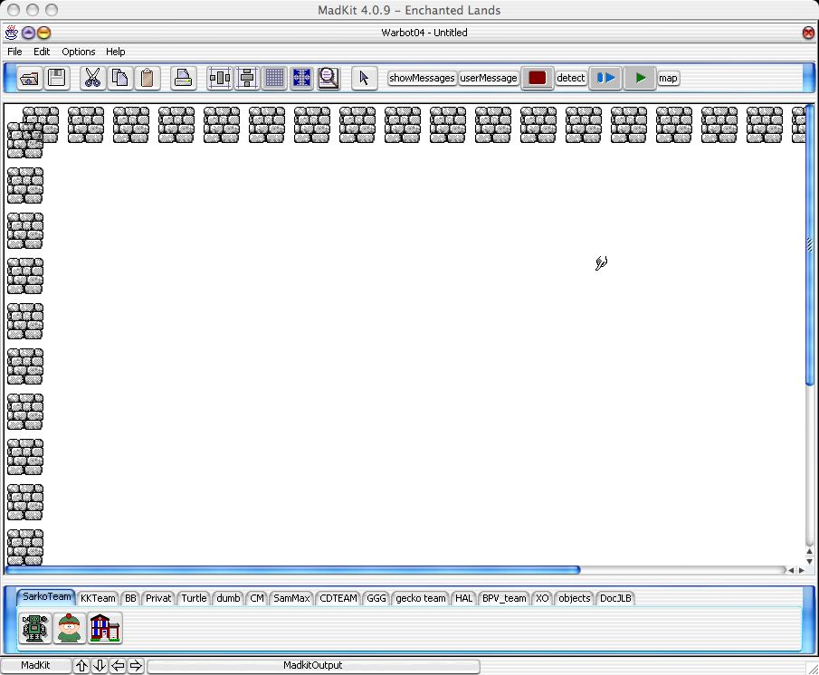

Vous êtes arrivé à lancer Warbot: bravo.
Vous êtes arrivé à lancer Warbot: bravo.
L'écran que vous avez devant vous ressemble certainement à ceci:

(double cliquez sur l'image pour l'agrandir)
Cet écran est composé de deux éléments: l'environnement Warbot, limité par des murs, et une zone contenant des onglets.
Chacun des onglets en bas de l'écran représente une équipe, sauf :
Chaque équipe est constituée d'une base et de deux types d'agents: des explorateurs et des tireurs. La base est d'ailleurs un agent particulier. Les trois icones sous les onglets permettent de sélectionner le type d'agent que l'on souhaite créer. Une fois cette sélection faite, un clic dans la zone vide permet de désigner sa position initiale dans l'environnement Warbot.
Il faut maintenant peupler cet écran désespérément vide. Pour cela, sélectionnons l'onglet dumb. Peuplons notre espace d'une base, de 6 tireurs et 8 explorateurs (dans chaque équipe: une rouge et une verte). Puis ajoutons y une trentaine de hamburgers, 6 murs et 3 explosifs (qui apparaissent dans l'environnement comme des petits points: ils sont enterrés).
On obtient alors un écran qui ressemble à cela.
Mis à jour le Sunday 3 April, 2005 18:09